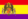

De: La Frikipedia, la enciclopedia extremadamente seria.
De: La Frikipedia, la enciclopedia extremadamente seria. De: La Frikipedia, la enciclopedia extremadamente seria.

|
ATENCIÓN El autor de este artículo pide una ayudita. Porque es más triste de robar que de pedir. Se le han terminado las ideas y pide de rodillas a los frikipedistas (más listos, inteligentes y guapos que él) que le ayuden a terminar o mejorar su obra. |
| De la serie MotoGP Teams: | |||
| Honda Repsol Team | |||
| |||
| Nacionalidad: | | ||
| Jefe de equipo: | Shuei Nakamoto | ||
| Pilotos: |  Chiquitín Márquez Dani Pedrusco | ||
| Suministrador de motores: | Honda, | ||
| Moto: | Honda, | ||
| ¿Malos o buenos? | Los mejores | ||
| Años en la MotoGP: | Desde 1995 | ||
| Carreras disputadas: | Muchas carreras | ||
| Carreras ganadas: | Muchas | ||
| Títulos mundiales: | 10 | ||
«En los últimos 5 años, Casey tiene mejores estadísticas que Rossi»
~ HRC desvariando (si contamos que en 4 de esos años el pedrusco estaba en Ducati)
«¿Y por que no comparáis mis 5 primeros años con los del pedruscazo?»
~ Valentino haciéndole cagar a los Hundidos
«En Repsol se beben gasolina en vez de echarla en los depósitos»
~ Valentino Rossi explicando porque se fue a Llamaja
«Cago en!»
~ Los dirigentes de Honda enfadados porque Ducattini y Yamajaja ganan en su circuito
El Honda Repsol Team, es el equipo que gana siempre en MotoGP, y que solo dos grandes como Llamaja, aunque en los últimos años Jorge Lorenzo (si, él solo, porque a Rossi y al texano loco ni puto caso) equilibró la balanza a base de favores sexuales gracias a las lesiones de Rossi y Dani.
Puedes entrar en el equipo? la respuesta es depende, depende de lo bien que le caigas a la prensa o a los jefazos de Honda.
A partir de ahí el resto entraron más con un término medio (Stoner y Márquez se lo curraron más, Barros y El vicioso menos, pero sin llegar al enchufismo de Nicky KFC).
Ya antes de la llegada de Repsoil el equipo HRC, que significa Humus Reactivo al Cloro que significa Honda Racing Corporation era uno de los que más pagaban por amañar el campeonato de los más potentes. Sus pilotos más destacados fueron Mario, Luigi y Bowser Freddie Spencer y Mick Doohan.
Podemos decir que Repsol entró en las motos para mejorar la calidad de sus combustibles y para apoyar el deporte, pero sabemos que eso es una mentira casi tan grande como decir que a Yuji Ide se le puede llamar piloto. Lo que verdaderamente pasó fue que en 1993 Wayne Rayney, que venía ganando los campeonatos anteriores se pegó el castañazo de su vida y se quedó paralítico, como Paco Güiliams, y Kevin Schwantz, su mayor rival se retiró en su honor tras ser campeón ese mismo año, entonces solo quedaba Mick Doohan, ese asutraliano que en cuanto le dieron la Honda oficial se pasó por la piedra a todos hasta que se destrozó los tobillos en Assen, pero ya recuperado fue campeón en 1994, y saltó la noticia de que Bialli (campeón de 250cc) se iba a quedar en la categoría, entonces Repsol vió el filón que supondría patrocinar al equipo, además de que con el fichaje al año siguiente de Crivi, el público en Ejpaña y olé subiría como la espuma, de hecho se rumoreó que en Repsol obligaron a Doohan a bajar el ritmo en algunas carreras para que Crivillé apareciese en la tele un poco, pero aún así siempre ganaba Doohan.
La temporada 1998 empezó con Bialli subiendo a 500cc tras cuatro títulos consecutivos, haciendo una demostración de humildad, si, es decir, diciendo Me voy a 500cc porque estoy harto de ganar siempre en 250cc, la verdadera razón es que Rossi subía ese año a 250cc, Capirrex bajaba desde 500cc para ganar su tercer título, y Tetsuya Harada también subía a 250cc, y además todos ellos ficharon por el equipo de Bialli (Acabaron 1º, 2º y 3º, no digo más), y como Biaggi sabía que no les iba a ganar se fue a 500cc, y en la primera carrera el tío ganó, acojonando a los de Repsol, pero al final Doohan acabó campeón con récord de puntos.
En esta franja de tiempo fueron buenos, sobre todo con Rossi.
| | ||
|
Autor(es):